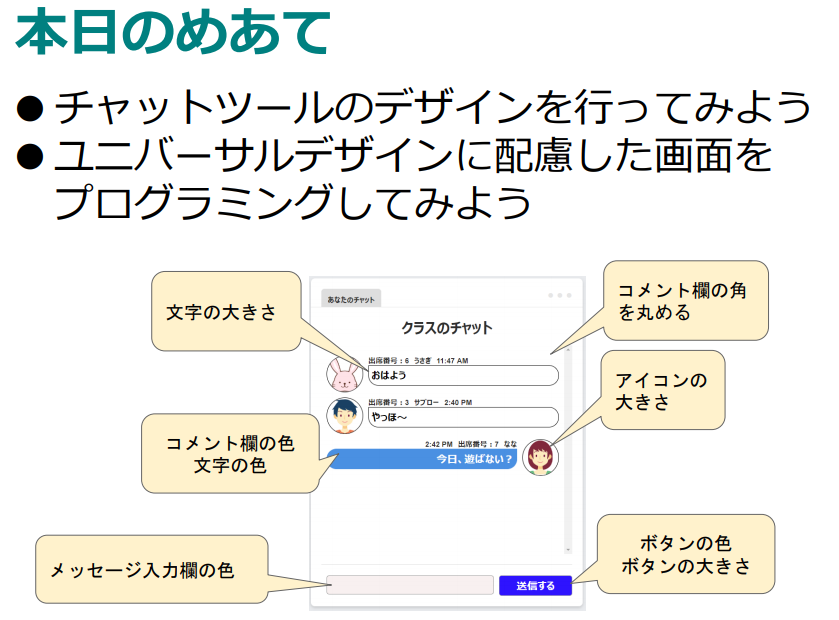
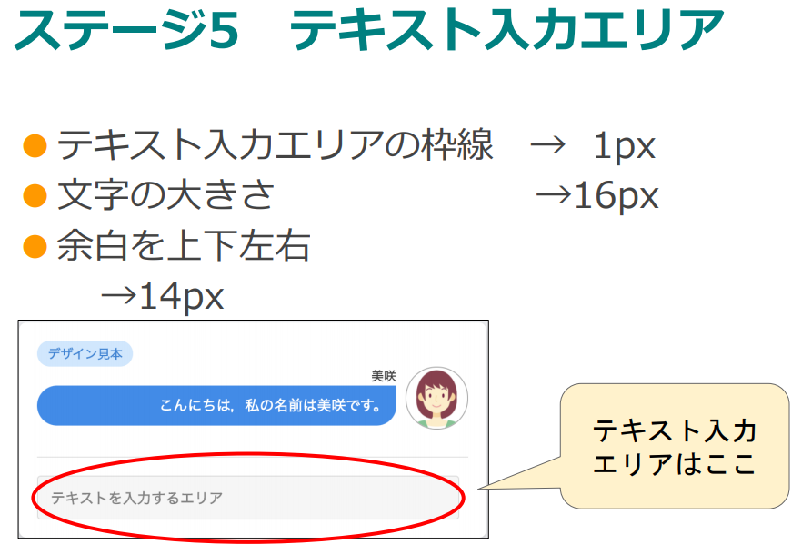

What you'll learn
- 伝言板のデザインを行うことができる。
- ユニバーサルデザインに配慮した画面を設計することができる。
スライド | 指導者 |
前回、初期登録が終わったところで授業がおわりました。 今回は、ログインをしてみましょう。新規登録ではないので注意してください。 | |
ログイン画面で、クラスID、出席番号、自分のパスワードを入力しましょう。 | |
| このホーム画面になったら準備完了です。 正面に注目してください。 |

パスワードを忘れてしまった生徒はリセットをかけて、もう一度初期登録から行わせてください。
- 伝言板のデザインを行うことができる。
- ユニバーサルデザインに配慮した画面を設計することができる。
ここで質問です。
ユニバーサルデザインとは何でしょう？
教科書やWebサイトを調べてもいいですよ。
調べた結果をワークシートに記入してみましょう
スライド | 指導者 |
画面を見ると3色の画面が見えます。 どれが好きですか？ どれが見やすいですか？ 人それぞれ感じる印象は違いますね？ | |
あなたはどの色の組み合わせに目が行きますか？ どれが目立つと思いますか？ | |
実は皆さんは街中でこの答えを普段から目にしています。 これらの標識を見たことはありますね。どうですか？ 人に認識されやすい色というのはある程度決まっています。 | |
また、色だけではなく明るさについても、明暗がはっきりしている方が認識しやすいです。 |
画面のデザインを考える上で色は大切な要素です。

Lesson1-1から1-8まで順番に学習していきます。
指導については、1ステージごとに説明を入れる or 説明をいれないで生徒のペースで学習を進める、のどちらでも大丈夫です。
生徒、学校の状況に合わせて選んでください。
下記、先生メニューの課題一覧からクラスの進捗状況を確認して、Lesson1-8の前に説明を入れるのがおすすめです。

先ほどのスライドもあわせて、目立つ色の組み合わせを考えましょう。 →ワークシートに記入しましょう | |
画面の通り | |
画面の通り | |
画面の通り | |
 | 画面の通り |
画面の通り | |
画面の通り。 | |
進捗状況を確認しながら、クラスの半数がステージ８まで到達したらこのスライドを説明 Lesson1-1~7で学習したことを1-8で表現しましょう。 その際、使ってもらう人は誰？ その人に見やすい・使いやすいチャット画面とはどのようなものか？考えながら作りましょう。→制作できたらステージ８で工夫した点をワークシートに記入する |
※チャットツールの利用者は生徒に考えさせても、指導者が一律で与えてもどちらでもよい。
※年配の方や色覚障害のある方の見にくい色などをWebで調べてもよい。
※ステージ８でユニバーサルデザインに意識を向けておかないと、制作物がただのカラフルなチャット画面になってしまうので注意
この時間の目標
- 伝言板のデザインを行うことができる。
- ユニバーサルデザインに配慮した画面を設計することができる。
生徒に質問しながら本時をまとめる
掲示板の基本的なデザインは指示通りに行うことはできましたか？
ユニバーサルデザインを意識してユーザーに使いやすい掲示板を作ることはできましたか？